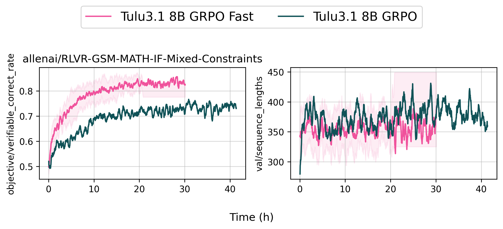
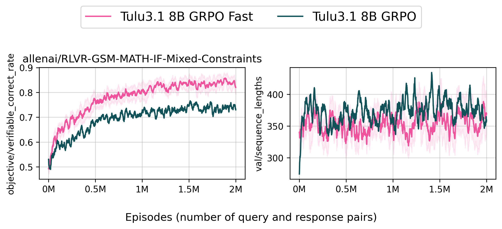

00全景与读法
OLMo 3 的核心主张不是单点性能，而是 model flow：模型完整生命周期的每个阶段、每个 checkpoint、每条数据、每个依赖全部开放，研究者可在任意节点介入或分叉。第三方 Artificial Analysis Openness Index 89 分居首。RL 侧是本篇重点：OlmoRL（active sampling、token 级损失归一化、无 KL、截断 IS、异步 in-flight 更新，自报 1024 张 H100 提速约 4×）把 RLVR 升级为训练主干；RL Zero 变体（从 base 直接 RLVR + 激进去污染 + 随机奖励负对照）首次使 RLVR 增益的因果归因成为可能。与之并存的是采用量现实：第三方 Ai2 系约 1480 万下载 vs Qwen 9.4 亿+——它是研究基座与透明性公共品，而非生态份额竞争者。
每一节固定三段：朴素基线（左栏，灰）——多数 open-weights 模型的默认做法，即"带公开接口的未公开系统"；它的做法（右栏，橙）——OLMo 3 实际怎么做；差在哪（下方色块）——差异的实质、原文是否给了证据、对 RL-on-NPU 的含义。数字按来源分三类：第三方 独立评级或报告；自报 AI2 技术报告 / 博客口径；推断 本站分析。原文声明：arXiv 直接抓取受代理限制，论文细节经官方脚本 / 博客与多家二手来源交叉，评测数字多为二手转述（provisional）——这一限定全文保留。
贯穿全文的一条线索：可复训与可归因才是参考栈的价值上限。数据可下载让 RLVR 增益可以排除泄漏混杂（RL Zero），中间 checkpoint 让每一阶段可审计（OlmoRL 全曲线公开），这两点直接对应 D30 的污染主题与 D20 对 openPangu"参考栈"的期待。
01定位：model flow 与开放度光谱
model flow 的含义是：研究者可在任意节点介入或分叉——研究能力涌现、对特定阶段做消融、在 mid-train 换入领域数据、从更早的 checkpoint 分叉后训练。与之对照，多数 open-weights 模型是"带公开接口的未公开系统"：可用，不可审计，不可复训。该主张已获第三方评级背书：第三方 Artificial Analysis Openness Index 中 OLMo 家族以 89 分居首（Nemotron Nano 67 分），欧洲 OSAI Index 亦长期将其列为最开放。
| 层级 | 代表 | 开放内容 |
|---|---|---|
| model flow 全开放 | OLMo 3（Apache 2.0） | 权重 + 数据 + 训练代码 + 中间 checkpoint + 日志 + 溯源工具 |
| 权重 + 部分数据 | Nemotron 系 | 权重 + 报告 + 部分数据集 |
| 权重 + 推理代码 + 报告 | openPangu 2.0（D20） | 训练代码承诺中、数据未开 |
| 权重 + 报告 | LongCat-2.0（D21） | 训练代码与数据未开 |
| 仅权重 | K3 / GLM / DeepSeek V4 | MIT / 类 MIT 许可，无数据无训练代码 |

这张图怎么读
看三层之间的两条实线箭头：数据 → 训练 → 评测，这是任何模型都有的流程；OLMo 3 的差别不在箭头，而在每一层的节点是否可下载。逐节点核对：数据层的池与后训练套件可下载、工具链开源；训练层的两个代码库开源、checkpoint 每 1000 步一存、曲线公开；评测层的 OLMES 可复现、OLMoTrace 可溯源。图上没有任何一个节点是"仅描述、不可获得"的——这就是"链条无缺口"的含义。
再看训练层伸出的那条虚线，指向 "model flow 主张：任意阶段可介入、可分叉、可审计"。它从训练层而非数据层引出，因为可介入的前提是中间 checkpoint——没有每 1000 步的存档，"从更早的 checkpoint 分叉后训练"无从谈起。把这张图与第 01 节的光谱表对照：表中其他四个层级的模型，在这张图上至少有一层节点是空的。
朴素基线
开源即开放权重：发布最终 checkpoint 与技术报告，训练数据描述其构成但不提供下载，训练代码不开或部分开，中间 checkpoint 不留。用户可以推理与微调，但不能审计训练过程，也不能从中途复训。
它的做法
完整 model flow：Dolma 3 预训练数据（9.3T token 池可下载）、Dolci 后训练数据、OLMo-core / open-instruct 训练代码、预训练每 1000 步的中间 checkpoint、公开 WandB 曲线、OLMoTrace 输出溯源。第三方 Openness Index 89 分居首，Nemotron Nano 67 分次之。
差在哪差在"可用"与"可审计、可复训"之间。原文给出的证据是两个独立评级（Openness Index、OSAI Index）的一致结论，属第三方口径。对 RL-on-NPU 的含义在第 07 节第三点：D20 把 openPangu 定位为"昇腾上的一手参考栈"，而 OLMo 3 的工件清单就是"参考栈"这个概念的完整形态——对标时应逐节点核对，而不是只看权重许可。
02模型家族与架构：保守混合
家族矩阵：7B 与 32B 两档 × Base / Instruct / Think / RL Zero（RL Zero 仅 7B）四条路径；旗舰为 Think 32B；2026-01 的 Olmo 3.1 为 32B Think 追加约 3 周 RL 并补齐 32B Instruct。架构相对 OLMo 2 的更新克制：保留 post-norm RMSNorm、QK-norm、z-loss 等稳定性组件，新增滑动窗口注意力混合——每 4 层中 3 层用 4096-token 局部窗口、每第 4 层全注意力；32B 用 GQA（40 查询头 / 8 KV 头），7B 保持 MHA；上下文 65K（预训练 8192，YaRN 扩展，且 YaRN 仅施加于全注意力层）。
放进 D24 的注意力谱系：工业旗舰在稀疏化（DSA / LSA）与线性化（KDA）两条激进路线上竞争，OLMo 3 选择了最保守的 SWA 混合——同为"3:1 局部与全局分工"，但不改状态更新方程、不做可学习索引。值得注意的后续：AI2 在 2026 年发布 Olmo Hybrid（7B，75% 层 Gated DeltaNet + 25% 标准注意力，官方博客）——Gated DeltaNet 正是 KDA 的直接前身（D24 §2），全开放阵营也开始验证线性混合路线，且提供与 OLMo 3 7B 的受控对比。
朴素基线
新一代模型以架构创新为卖点：引入稀疏注意力或线性注意力变体，改状态更新方程或加可学习索引，架构改动与数据改动同时发生，消融时难以分离。
它的做法
架构更新克制：保留 OLMo 2 的稳定性组件，只加 SWA 混合（3 局部 : 1 全局，4096 窗口）、32B 改 GQA、YaRN 仅施于全注意力层扩到 65K。激进的线性混合路线留给单独的受控实验 Olmo Hybrid（75% Gated DeltaNet + 25% 标准注意力），与 OLMo 3 7B 直接对照。
差在哪差在把架构变量与数据变量分开：OLMo 3 主线上架构改动最小，使第 03 节的数据配比与第 04 节的后训练配方成为性能差异的主要解释变量；线性混合路线单列为 Olmo Hybrid 做受控对比。原文对此的判断是"最保守的 SWA 混合"，并未主张架构优越性。对 RL-on-NPU 的含义：SWA 混合不引入新算子形态，是昇腾算子覆盖压力最小的一种注意力选择；Olmo Hybrid 的受控结论将为 D24 的 KDA 路线提供独立证据（"下一步看什么"第一项）。
03数据体系：三层漏斗与公开配比
Dolma 3 的组织是三层漏斗，配比全部公开——对照 D28 记录的"工业界数据配比不公开的惯例"，这是唯一的完整反例：主训 Dolma 3 Mix，5.9T token（从 9.3T 池筛出；代码与数学占比高于前代）；mid-train Dolmino Mix，100B（从约 2.2T 高质量池采样：数学 / 科学 / 代码 / 指令 / 思维链）；长上下文 Longmino Mix，7B 训 50B、32B 训 100B（639B 长文档池，34% 长文 / 66% 短文）。
数据工程为自研 Rust 工具链：duplodocus 三段式去重（精确哈希 38.7B → 12.8B 文档、MinHash 模糊、后缀数组子串）、WebOrganizer 24 主题 × 20 质量档共 480 桶、fastText 质量分类，混合比例经 swarm 式小模型消融确定。算力口径：自报 7B 用 512×H100、32B 用 1024×H100，32B Think 全流程约 56 天、约 $2.75M（二手转述，provisional）。评测定位（多为二手转述）：Think 32B 以约 1/6 的训练 token 逼近 Qwen 3 32B（MATH 96.2、AIME'24 80.6），是完全开放阵营首个可与 open-weights 旗舰同档竞争的推理模型；知识型多选（MMLU 系）仍落后数分。"更少 token 打平"的含义：数据配比与后训练配方是主要杠杆。

这张图怎么读
先看主链上的四个数字量级：9.3T → 5.9T → 100B → 50B / 100B。第一次收窄（池到主训）是质量筛选，去掉约三分之一；第二次收窄（主训到 mid-train）是两个数量级的跨越，说明 mid-train 是高度精选的小数据阶段；第三次是长上下文专用。每一层的数字都公开，这是 D28 记录的工业界惯例里没有的——其他厂商通常只给总 token 数。
再看两条虚线的落点：去重作用于池（最上游），分桶作用于主训 Mix（第二层）。这个位置差说明去重是全池操作（38.7B → 12.8B 文档），而质量分桶是配比阶段的工具（480 桶供 swarm 小模型消融选比例）。图上没有画的是各桶的最终配比数值——原文说配比公开，但本篇未逐项转录，需回到 dolma3 仓库核对。
朴素基线
技术报告给出总训练 token 数与数据来源类别（网页、代码、数学、书籍），配比以"经消融确定"一笔带过，具体比例、去重方法、质量分档不公开，数据本身不可下载。
它的做法
三层漏斗每层给数字（9.3T 池 → 5.9T → 100B → 50B / 100B），配比全部公开；去重三段式与文档数（38.7B → 12.8B）、分桶维度（24 × 20）、质量分类器（fastText）、配比确定方法（swarm 式小模型消融）全部说明；池以 ODC-BY 可下载。自报 Think 32B 以约 1/6 token 逼近 Qwen 3 32B（二手转述）。
差在哪差在数据是否可作为实验变量。基线的数据是不可复现的常量，OLMo 3 的数据是可以替换、消融、审计的变量——这也是"更少 token 打平"这一结论有意义的前提：只有配比公开，才能主张数据配比与后训练配方是主要杠杆。原文对评测数字的限定是多为二手转述、provisional；$2.75M 成本同样为二手转述。对 RL-on-NPU 的含义：可下载的预训练数据是第 05 节 RL Zero 去污染的前提——没有它，任何 RLVR 涨分都无法排除泄漏。
04后训练与 OlmoRL：RLVR 成为训练主干
后训练统一为 SFT → DPO → RLVR 三阶段，配 Dolci 数据套件（按阶段 × Instruct / Think / RL-Zero 路径分别发布）。谱系上，这是 Tülu 3（RLVR 概念的提出者，2411.15124）管线的大规模翻新：数据全部重刷、RL 从"最后小规模润色"升级为主要能力阶段。三个值得单独记录的设计：
① Delta Learning DPO。Think 路径的 DPO 对：chosen 来自 Qwen3-32B（thinking）、rejected 来自 Qwen3-0.6B——关键是两者的质量差而非绝对质量。直接在 Qwen3-32B 补全上继续 SFT 反而掉分，delta-pair DPO 则同时提升 pass@1 与 pass@k（扩展推理边界）。
② OlmoRL 工程包。GRPO / DAPO 系改进的完整公开实现：零梯度组过滤 + active sampling（持续补采样直到凑满整批非零优势）、token 级损失归一化（去长度偏置）、无 KL 惩罚、clip-higher、截断重要性采样（容忍异步 off-policy）；基建为全异步 RL + continuous batching + in-flight 权重更新，自报 最多 1024 张 H100 上提速约 4×，32B Think 的 RL 从超 15 天压缩到约 6 天。奖励设计：数学 SymPy 符号等价、代码测试执行（AWS Lambda、pass-rate 阈值）、精确 IF 约束函数、通用对话用 Qwen3-32B 作 judge。这套组合与看板 D18 / D19 / D22 记录的工业实践（AIPO / TIS / compact filtering 系）高度同源，差异在于全部脚本、超参与 WandB 曲线公开——7B Think RL 的复现开销约 32–72 张 H100 级 GPU，处于高校实验室可及范围。
③ 每阶段 checkpoint 留档。SFT / DPO / RL 各阶段模型独立发布（如 Olmo-3-7B-Instruct-SFT），配 WandB 全曲线——后训练从不可见变成可逐段审计的流水线。

这张图怎么读
先比较三条路径的第三阶段：Instruct 的 RLVR 用 17 万 prompt，Think 用 10.2 万难题，RL Zero 则从 Base 直接进入 RLVR。三条路径最终都汇入同一个 OlmoRL 工程包——RL 阶段的算法与基建是共享的，差异只在数据与起点。这就是"RLVR 从收尾工序升级为训练主干"的结构含义：它不再是某一条路径末端的小步骤，而是三条路径的公共主干。
再看 OlmoRL 框内四组组件的分工：第一组（active sampling）解决"整批里多少样本有梯度"，第二组（token 级归一化 / 无 KL / clip-higher）是损失函数层的稳定化，第三组（截断 IS）容忍异步带来的 off-policy，第四组（异步 + in-flight 更新）是基建层——四组恰好对应 D18 / D19 / D22 记录的工业实践（AIPO / TIS / compact filtering 系）。Think 路径中的 Delta Learning DPO 值得单独注意：chosen 来自 Qwen3-32B、rejected 来自 Qwen3-0.6B，信号是质量差而非绝对质量。

这张图怎么读
这张图不是 OLMo 3 的数字，但它是 OlmoRL 所在代码库（open-instruct）公开的异步 RL 基建对照，与第 04 节"零梯度组过滤 + 异步"两项组件直接对应。横轴是墙钟小时：粉色曲线（GRPO Fast）在约 30 小时结束训练时正确率约 0.83；墨绿曲线（旧版 GRPO）跑了 40 小时以上，停在约 0.74。同一数据集、更短的时间、更高的正确率——这是异步与跳零梯度批合在一起的效果，仓库文档自述简单任务快约 2×、复杂任务可达 10×。
右图序列长度两条曲线均在 300–450 之间波动，没有系统性分离，说明速度增益不是靠缩短回复换来的。粉色曲线的浅色阴影是多次运行的区间，右侧 20–30 小时处阴影突然变宽是该区间运行数减少所致，读数时以粗线为准。这张图的边界很清楚：它证明的是基建对照（open-instruct 内部两版实现），不是 OLMo 3 对其他模型的能力对照。

这张图怎么读
把横轴从时间换成样本数后，两条曲线的分离仍然存在：同样 2M 个 episodes，粉色约 0.83、墨绿约 0.74。这一点很重要——如果两条曲线在样本轴上重合而只在时间轴上分离，那么增益纯粹来自吞吐；现在两个轴上都分离，说明跳零梯度批改变的不只是速度，还有单位样本的学习效率：全对或全错的组优势为零、梯度为零，把它们剔除后同等样本预算下有效梯度更多。
这正是 OlmoRL 中 active sampling（持续补采样直到凑满整批非零优势）的前身逻辑——grpo_fast 是"跳过零梯度批"，active sampling 是"补采到整批非零"。与图 4 合看：时间轴上的差距（30 小时 vs 40 小时以上）来自异步基建，样本轴上的差距来自过滤策略，两者是 OlmoRL 工程包里可以分开归因的两项。
朴素基线
RLVR 是后训练末尾的小规模润色（Tülu 3 时代的位置）；DPO 对以绝对质量选 chosen；训练细节在报告中描述但脚本与超参不完整公开、曲线不公开；只发布最终模型。
它的做法
RLVR 升级为主要能力阶段；Delta Learning DPO 以质量差为信号（chosen Qwen3-32B / rejected Qwen3-0.6B）；OlmoRL 五项稳定化组件 + 全异步 in-flight 基建（自报 1024 H100 提速约 4×，32B RL 15 天以上压至约 6 天），全部脚本、超参、WandB 曲线公开；SFT / DPO / RL 各阶段模型独立发布。7B Think RL 复现约 32–72 张 H100 级 GPU。
差在哪算法层面 OlmoRL 与工业实践高度同源（AIPO / TIS / compact filtering 系），原文明确指出差异不在配方而在公开程度——脚本、超参、曲线全部可得，且每阶段 checkpoint 留档使后训练可逐段审计。提速约 4× 与 6 天为自报。对 RL-on-NPU 的含义在第 07 节第二点：这组已验证的稳定化组件有完整公开实现，是 MindSpeed-RL 语境下最可直接借鉴的参考代码，而 open-instruct / OLMo-core 的昇腾移植目前是空白。
05RL Zero：无泄漏的 RLVR 试验台
RL Zero 是对本看板最有价值的部件：从 Base 直接做 RLVR、完全跳过 SFT / DPO，按 math / code / IF / general 四个域独立训练并发布全程 checkpoint。两个设计使它成为可控实验床：激进去污染——Dolci-RLZero 数据对预训练与 mid-train 语料做近重复感知去污染；随机奖励负对照——若评测题在预训练中泄漏，spurious reward 也会涨分，OLMo 3 用该负对照验证无泄漏增益，直接回应 "Spurious Rewards" 争议。
这解决了社区的结构性痛点：Qwen / Llama 等 base 不公开预训练数据，RLVR 涨分永远无法排除数据泄漏混杂——D30 论证的"污染是评测三威胁之一"在训练研究侧同样成立，RL Zero 是第一个系统性堵住该混杂的公开基座。第三方 已在使用：推理链控制研究（2603.05706）、OlmoLogic（TU Darmstadt，在官方 RLVR 配方上接入 Prolog 符号验证器，博客）、预训练动态与 probing 研究直接取用其中间 checkpoint。
这张图怎么读
这是一条因果推理链，读法是反证。设计二的节点内写着完整的逻辑：若泄漏则 spurious reward 也涨分；实测不涨；所以增益归因于 RL 本身。负对照的价值在于它不需要证明"没有泄漏"这个否定命题，只需要给出一个在泄漏情形下必然为正的观测量（随机奖励下的涨分），再实测它为零。
注意设计一与设计二的顺序：先去污染，再做负对照。去污染是主动手段，负对照是验证手段——两者缺一不可：只有去污染无法证明去干净了，只有负对照无法解释为什么干净。终点节点的"四域独立 checkpoint"是它作为试验台的可用性：math / code / IF / general 各自独立训练，研究者可以在单一域上做消融而不受其他域干扰。这就是原文所说"第一个系统性堵住该混杂的公开基座"。
朴素基线
在 Qwen / Llama 等 base 上做 RLVR，报告涨分；预训练数据不公开，评测题是否泄漏无法核查；RLVR 增益与"base 见过测试分布"两个解释无法分离——Spurious Rewards 争议由此产生。
它的做法
从公开数据的 Base 直接 RLVR，跳过 SFT / DPO；Dolci-RLZero 对预训练与 mid-train 语料做近重复感知去污染；随机奖励负对照实测不涨，证明增益归因于 RL 本身；四域独立训练并发布全程 checkpoint。第三方 已有推理链控制、OlmoLogic、probing 研究取用。
差在哪差在RLVR 增益能否做因果归因。基线里增益与泄漏是混杂的，RL Zero 用"可下载数据 + 去污染 + 负对照"三件事把混杂堵住。原文的证据包括设计本身与三项第三方使用记录。对 RL-on-NPU 的含义有两层：第一，RL Zero 四域 checkpoint 直接支持"从 base 起 RL"的对照设计（第 07 节第一点）；第二，随机奖励负对照不依赖 OLMo 本身——任何 RLVR 研究，含昇腾上的复现，都应加入该对照（第 07 节第四点）。
06生态位：评级上限与采用量现实
两组数字并置即是 OLMo 3 的生态位：第三方 开放度评级居首（89 分），而采用量悬殊——ATOM Report 口径 Ai2 系累计约 1480 万下载，对照 Qwen 累计 9.4 亿+（2026-08 已 20 亿+，衍生模型 15 万个）。OLMo 的影响集中在科研而非部署。
批评集中三条：规模上限 32B dense（与中国第一梯队差一个数量级，不参与前沿能力竞争）、明确英文中心、定位是"研究仪器"而非日常可用模型。在中美开源叙事中，它被引用为美国方面"真开源"的旗帜（AI2 的 ATOM 叙事），但份额层面中国阵营优势持续扩大（第三方 HF 口径中国开源模型占全球下载 41%）。后续演进延续"科研深耕"路线：Olmo 3.1（RL 加训）、Olmo Hybrid（线性混合架构受控实验）——未见更大尺寸计划，自报 AI2 自述 32B 是"科研 + 可部署"的平衡点。
朴素基线
开放度越高采用量越大；一个评级居首的开源模型应当在下载量与衍生模型数上同样领先，否则开放度的价值存疑。
它的做法
评级居首（89 分）与下载量约 1480 万（对 Qwen 9.4 亿+）并存；规模上限 32B dense、英文中心、定位"研究仪器"。AI2 未见更大尺寸计划，后续为 Olmo 3.1 与 Olmo Hybrid 两个科研方向。
本站判断两组数字不矛盾：OLMo 3 提供的是研究基座与透明性公共品，不是生态份额。开放度的价值兑现在第三方研究产出（第 05 节的三项使用记录）而非部署量。对 RL-on-NPU 的含义：选它作研究基座不需要考虑生态份额，需要考虑的是 32B dense 的规模上限与英文中心是否与研究问题匹配——D25 最小可行系统的效率感知 RL 消融正在这个范围内。
07对 RL-on-NPU 的含义
最小可行系统的基座升级接 D25
D25 的四步路线图建议以 Qwen2.5-1.5B + verl 起步；OLMo 3 提供了更干净的替代：7B RL 复现 32–72 卡可及，且数据可审计——效率感知 RL 的消融结论不再受"基座见没见过测试分布"的混杂。RL Zero 四域 checkpoint 直接支持"从 base 起 RL"的对照设计。
OlmoRL 工程包的移植价值接 D13 / D23
active sampling、token 级损失归一化、截断 IS、in-flight 更新——这组已验证的稳定化组件有完整公开实现，是 MindSpeed-RL 语境下最可直接借鉴的参考代码；open-instruct / OLMo-core 的昇腾移植目前是空白。
model flow 是 openPangu 的应然形态接 D20
openPangu 承诺的"七大组件"迄今训练代码与数据未兑现；OLMo 3 证明全链路开放在工程上完全可行且与竞争力兼容（1/6 token 逼近 Qwen 3 32B）。昇腾生态若要建立可复现的 RL-on-NPU 研究底座，OLMo 3 的工件清单就是对标清单。
负对照方法的推广
随机奖励负对照不依赖 OLMo 本身，任何 RLVR 研究（含昇腾上的复现）都应加入该对照——成本一次训练，换来增益归因的可信度，与 D13 的 align-probe、D30 的判分独立性同属"测量诚实性"工具箱。
朴素基线
RL-on-NPU 研究以 Qwen 系小模型 + verl 起步，基座数据不可审计；稳定化技巧从各家报告中零散拼凑；"参考栈"以权重开放为标准；RLVR 涨分直接报告，不做负对照。
它的做法
OLMo 3 提供数据可审计的 7B 基座（32–72 卡可复现）与 RL Zero 四域起点；OlmoRL 是一份完整公开的稳定化参考实现；model flow 工件清单是"参考栈"的对标标准；随机奖励负对照是一次训练成本换归因可信度的通用方法。
本站判断四点含义中，第一与第四点立即可用（换基座、加负对照，均无需硬件适配）；第二点是有明确参考代码的空白领域（open-instruct / OLMo-core 无昇腾端口）；第三点是对标标准而非工程任务。全开放代码 × 国产硬件是目前尚无公开工作的组合——这既是缺口也是机会。
08总表：朴素基线 vs OLMo 3 的做法
| 维度 | 朴素基线 | OLMo 3 的做法 · 差在哪 |
|---|---|---|
| 开放范围 | 权重 + 报告，数据描述但不可下载 | 完整 model flow：数据、代码、每 1000 步 checkpoint、WandB 曲线、OLMoTrace；Openness Index 89 分居首（第三方）。可审计、可复训 |
| 架构 | 以稀疏 / 线性注意力创新为卖点 | 保守 SWA 混合 3:1、32B GQA、YaRN 仅施于全注意力层；线性混合单列为 Olmo Hybrid 受控实验。架构变量与数据变量分离 |
| 数据 | 总 token 数 + 类别，配比不公开 | 三层漏斗每层给数字（9.3T → 5.9T → 100B → 50B / 100B）、去重与分桶方法公开、池可下载；D28 配比惯例的唯一完整反例 |
| 后训练 | RLVR 为末尾润色；脚本与曲线不全 | RLVR 为主干；Delta Learning DPO；OlmoRL 五项组件 + 异步 in-flight（自报 4×、6 天）；脚本、超参、曲线、各阶段模型全部公开 |
| 归因 | RLVR 涨分与泄漏混杂 | RL Zero：从 Base 直接 RLVR + 激进去污染 + 随机奖励负对照；四域独立 checkpoint。首个可做因果归因的公开试验台 |
| 生态位 | 开放度高应当份额大 | 评级居首 vs 下载约 1480 万（Qwen 9.4 亿+）；32B dense 上限、英文中心。研究仪器而非份额竞争者 |
| 对 RL-on-NPU | Qwen 小模型 + verl，无负对照，参考栈看权重 | 7B 数据可审计基座；OlmoRL 参考代码（昇腾端口空白）；model flow 为 openPangu 对标清单；负对照通用 |
09原文没给的东西
以下是复现或引用时必须自行确认、原文未给出或仅为二手转述的内容：
- 技术报告原文细节——arXiv 直接抓取受代理限制，论文细节经官方脚本 / 博客与多家二手来源交叉，以 2512.13961 原文为准；
- 评测数字——MATH 96.2、AIME'24 80.6、"约 1/6 token 逼近 Qwen 3 32B"、MMLU 系落后数分，多为二手转述（provisional）；
- $2.75M 成本与约 56 天全流程——二手转述，部分脚本级超参来自第三方整理；
- Dolma 3 各桶的最终配比数值——原文说配比公开，但本篇未逐项转录，需回到 dolma3 仓库核对；
- OlmoRL 提速约 4× 与 32B RL 约 6 天——AI2 自报，无独立复现；本篇图 4–5 为 open-instruct 前代实验（Tulu 3.1 8B），不是 OLMo 3 的曲线；
- 随机奖励负对照的具体读数——原文给出逻辑（实测不涨）但未转录数值与方差；
- Delta Learning DPO 掉分的幅度——"直接在 Qwen3-32B 补全上继续 SFT 反而掉分"未给数字；
- Olmo Hybrid 与 OLMo 3 7B 的受控对比结果——原文只记录其存在，量化差距待其结论（"下一步看什么"第一项）；
- open-instruct / OLMo-core 在昇腾上的可移植性——目前为空白，无任何公开尝试可供评估；
- 本篇原图：OLMo / OLMo-core / dolma3 仓库 README 仅含 logo 与徽章；AI2 博客与 arXiv 配图不可达；两张原图取自 open-instruct 的算法文档。
10判断与下一步
一、参考栈的价值上限是可复训与可归因，不是权重许可。OLMo 3 的工件清单（数据可下载、代码开源、每 1000 步 checkpoint、曲线公开、溯源工具）是"参考栈"一词的完整定义；openPangu 承诺的七大组件应以此逐项对标，训练代码与数据未兑现前它不是同一层级的开放。
二、RLVR 研究的基座应换成数据可审计的模型。在 Qwen / Llama 上做 RLVR，涨分永远无法排除泄漏；OLMo 3 的 7B RL 复现在 32–72 卡范围内，RL Zero 四域 checkpoint 支持从 base 起 RL 的对照设计——D25 最小可行系统的效率感知消融应迁移到这个基座上。
三、随机奖励负对照应成为 RLVR 报告的标配。它不依赖 OLMo，成本是一次训练，换来的是增益归因的可信度——与 D13 的 align-probe、D30 的判分独立性同属测量诚实性工具箱。昇腾上的任何 RLVR 复现都应附此对照。
Olmo Hybrid 的受控结论：Gated DeltaNet 混合在全开放对照下与标准注意力的差距量化——为 D24 的 KDA 路线提供独立证据 · OLMo 3 checkpoint 上的 RL 研究产出：RL Zero 试验台的论文流，尤其"预训练数据如何影响 RL 可塑性"方向 · open-instruct / OLMo-core 的非 NVIDIA 移植：是否出现昇腾 / AMD 端口——全开放代码 × 国产硬件是尚无公开工作的组合 · openPangu 训练代码兑现后的对照：两个"参考栈"的开放粒度与可复现性直接对比。